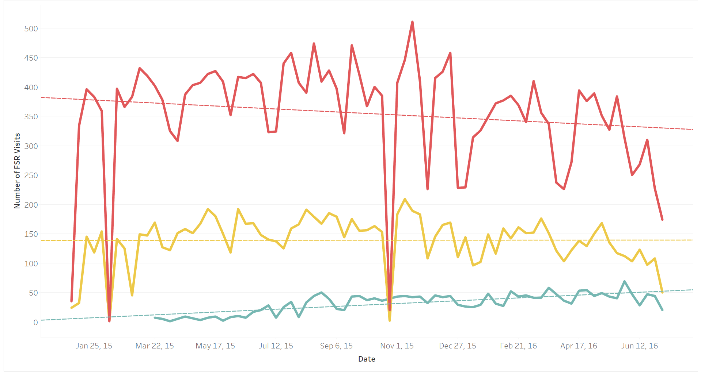
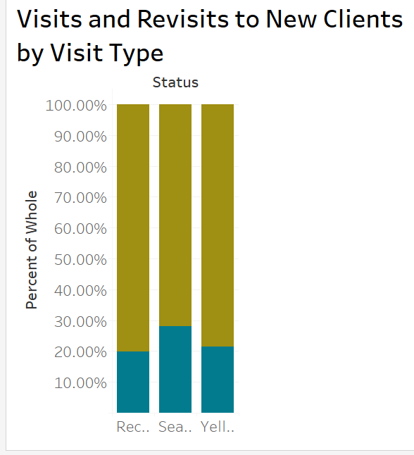

“Here is the scenario:
Given the start dates of the FSRs in yellow in the FSR Team start date file, how long did it take for them to mature to the point where their average visits per week matched that of their peers?
Please create a Tableau visualization that answers this question as well as visualizations for anything else interesting you see in the data set.
Let me know if you would be willing to do this and a ball park for when you think you will be ready to present to the team and I will get something scheduled. Also please feel free to reach out with any questions.
Thank you!"
Step 1
Look at the data. The full record is made up of 46755 rows of records with 18 different attributes. I have shown a sample below. I’ve truncated all names for anonymity but not standardized them for analysis, just to show the raw data.
library(knitr)
library(dplyr)
library(tidyr)
library(stringr)
library(scales)
library(lubridate)
fullData <- read.csv("C:/Users/Chris Iyer/Documents/R/myrepo/FullDataOrig.csv", header = T, na.strings=c("","NA"), stringsAsFactors = F)
startDates <- read.csv("C:/Users/Chris Iyer/Documents/R/myrepo/StartDates.csv", header = T, stringsAsFactors = F)
fullData$Activity.Recorded.By <- substring(fullData$Activity.Recorded.By, 1,4)
startDates$FSR <- substring(startDates$FSR, 1,4)
startDates$Manager <- substring(startDates$Manager, 1,4)
kable(head(fullData))| Running.Count | Actual.Activity.Date | Week.Ending | YearMonth | Activity.Recorded.By | Activity.Recorded.On | Rep.Role | Case.Type.Name…SA | SAP.Number | Practice.Name | City | State | Zip | Sales.Region | DPC.Territory | Activity.ID | Visit.Objective | Method |
|---|---|---|---|---|---|---|---|---|---|---|---|---|---|---|---|---|---|
| 1 | 1/1/2015 | 1/4/2015 | 2015M01 | Angi | 1/1/2015 | General | FTS Sales Activity | 20613 | COWETA ANIMAL HOSPITAL | NEWNAN | GA | 30263 | Southeast | Atlanta S, GA | 22222315 | New Install | Appointment |
| 2 | 1/1/2015 | 1/4/2015 | 2015M01 | LeBo | 1/1/2015 | FSR - DX | FTS Sales Activity | 101848 | FRANKFORT ANIMAL CLINIC | FRANKFORT | KY | 40601 | Tennessee Valley | Lexington, KY | 22222027 | Critical | Appointment |
| 3 | 1/1/2015 | 1/4/2015 | 2015M01 | Luce | 12/31/2014 | FSR - DX | FTS Sales Activity | 178192 | VETERINARY EMERGENCY AND SPECIALTY | SOUTH DEERFIELD | MA | 1373 | New England | Springfield, MA | 22220250 | New Install | Appointment |
| 4 | 1/1/2015 | 1/4/2015 | 2015M01 | Melt | 1/1/2015 | FSR - DX | FTS Sales Activity | 15357 | ALL CREATURES VETERINARY HOSPITAL | WICHITA | KS | 67212 | Mid America | Wichita, KS | 22221738 | New Install | Appointment |
| 5 | 1/1/2015 | 1/4/2015 | 2015M01 | Mill | 1/1/2015 | FSR - DX | FTS Sales Activity | 124531 | OAK ANIMAL HOSPITAL | VANCOUVER | BC | V6H 2 | Western Canada | Vancouver N, BC | 22221968 | Strategic | Appointment |
| 6 | 1/1/2015 | 1/4/2015 | 2015M01 | Mill | 1/1/2015 | FSR - DX | FTS Sales Activity | 286828 | BURRARD ANIMAL HOSPITAL AND EMERGENCY | VANCOUVER | BC | V6J 1 | Western Canada | Vancouver N, BC | 22221971 | New Install | Appointment |
kable(head(startDates))| FSR | Manager | Last.Hire.Date |
|---|---|---|
| Kare | Kare | 6/12/2000 |
| Pegg | Juli | 3/19/2007 |
| Dana | Karl | 3/19/2007 |
| Shar | Laur | 5/21/2007 |
| Caro | Karl | 6/25/2007 |
| Lisa | Bobb | 9/30/2007 |
NewDataSet <- read.csv("C:/Users/Chris Iyer/Documents/R/myrepo/FinalFullSet.csv", header = T, stringsAsFactors = F)
kable(head(NewDataSet))| FSR | Manager | Last.Hire.Date | Status | Actual.Activity.Date | Week.Ending | YearMonth | Rep.Role | Case.Type.Name…SA | SAP.Number | Practice.Name | City | State | Zip | Sales.Region | DPC.Territory | Activity.ID | Visit.Objective | Method | Index | WeekNumber | Day | DayWeekEnding | Visits | Visitors | meanVisitsWeekbyStatus | SeasonedAverage | YellowAverage | RecentAverage | TotalVisitsthisWeek | SeasonedAvDiffFSR | YellowAvDiffFSR | RecentAvDiffFSR | SeasAvDiffYellAv | SeasAvDiffRecentAv | YellowAv_RecAv | ZscoreFSR | Latitude | Longitude |
|---|---|---|---|---|---|---|---|---|---|---|---|---|---|---|---|---|---|---|---|---|---|---|---|---|---|---|---|---|---|---|---|---|---|---|---|---|---|---|
| Muns.K | Kare | 6/12/2000 | Seasoned | 1/1/2015 | 1/4/2015 0:00 | 2015M01 | FSR - DX | FTS Sales Activity | 191599 | STONECLIFF ANIMAL CLINIC OF NEW | LEBANON | NH | 3766 | New England | Burlington, VT | 22221939 | New Install | Appointment | 1 | 0 | Thursday | Sunday | 35 | 19 | 1.84 | 1.84 | 2.4 | 0 | 2 | -0.16 | 0.4 | NA | -0.56 | 0 | 0 | 1.414213562 | 44.47588 | -73.21207 |
| Muns.K | Kare | 6/12/2000 | Seasoned | 1/1/2015 | 1/4/2015 0:00 | 2015M01 | FSR - DX | FTS Sales Activity | 268304 | MEREDITH PLACE VETERINARY EMERGENCY | MEREDITH | NH | 3253 | New England | Manchester, NH | 22222008 | Strategic | Appointment | 2 | 0 | Thursday | Sunday | 35 | 19 | 1.84 | 1.84 | 2.4 | 0 | 2 | -0.16 | 0.4 | NA | -0.56 | 0 | 0 | 1.414213562 | 42.99564 | -71.45479 |
| Mill.J | Dani | 9/23/2013 | Seasoned | 1/1/2015 | 1/4/2015 0:00 | 2015M01 | FSR - DX | FTS Sales Activity | 124531 | OAK ANIMAL HOSPITAL | VANCOUVER | BC | V6H 2 | Western Canada | Vancouver N, BC | 22221968 | Strategic | Appointment | 3 | 0 | Thursday | Sunday | 35 | 19 | 1.84 | 1.84 | 2.4 | 0 | 4 | -2.16 | -1.6 | NA | -0.56 | 0 | 0 | 1.414213562 | 49.31998 | -123.07241 |
| Mill.J | Dani | 9/23/2013 | Seasoned | 1/1/2015 | 1/4/2015 0:00 | 2015M01 | FSR - DX | FTS Sales Activity | 286828 | BURRARD ANIMAL HOSPITAL AND EMERGENCY | VANCOUVER | BC | V6J 1 | Western Canada | Vancouver N, BC | 22221971 | New Install | Appointment | 4 | 0 | Thursday | Sunday | 35 | 19 | 1.84 | 1.84 | 2.4 | 0 | 4 | -2.16 | -1.6 | NA | -0.56 | 0 | 0 | 1.414213562 | 49.31998 | -123.07241 |
| Angi.B | Will | 2/17/2014 | Seasoned | 1/1/2015 | 1/4/2015 0:00 | 2015M01 | General | FTS Sales Activity | 20613 | COWETA ANIMAL HOSPITAL | NEWNAN | GA | 30263 | Southeast | Atlanta S, GA | 22222315 | New Install | Appointment | 5 | 0 | Thursday | Sunday | 35 | 19 | 1.84 | 1.84 | 2.4 | 0 | 1 | 0.84 | 1.4 | NA | -0.56 | 0 | 0 | -1.414213562 | 33.74900 | -84.38798 |
| Melt.R | Audr | 11/3/2014 | Yellow | 1/1/2015 | 1/4/2015 0:00 | 2015M01 | FSR - DX | FTS Sales Activity | 15357 | ALL CREATURES VETERINARY HOSPITAL | WICHITA | KS | 67212 | Mid America | Wichita, KS | 22221738 | New Install | Appointment | 6 | 0 | Thursday | Sunday | 24 | 10 | 2.40 | 1.84 | 2.4 | 0 | 2 | -0.16 | 0.4 | NA | -0.56 | 0 | 0 | -1.414213562 | 37.68718 | -97.33005 |
Included in the full set is Field Service Representative activity from Jan 1, 2015 - 6/30/2016. Each of the 47,755 records represent an FSR visit recorded by one of 107 different Reps. There are 10 different types of visits. The visits occur throughout the USA and Canada.
Although 2015 and 2016 were merged into one set, 2016 was missing some data. I split it into 2 datasets to reengineer some of what was missing.
Week.Ending: This date column is left blank. I filled in this information because I initially thought it would be easier on Tableau. This isn’t necessary however because Tableau can generate a week ending date with a simple click. All FSR weekly activity ends on Sunday and starts on Monday.
Running.Count: It ends after 32,967, at the final visit of week 52, the end of 2015. Because there are 14,788 records through the end of June, 2016, I completed this to run to the end of the full data.
City, State, Zip: The region and territory data are there, but they are insufficient to plot good maps in Tableau. I matched about 12,000 sites with the SAP.Number, a unique identifier for each site. For the rest, I generated latitude and londitude coordinateds in R and added them as new fields to the original data to use in Tableau.
Step 2
Clean the Names for a table join.
Because names are formatted differently, I could not join the tables in Tableau. This process was complicated by nickname which required that I look into individual data to make sure these Reps were excluded. Additionally, some of the Reps with hire dates are not included in the full data; fortunately, all “Yellow Hires” areincluded. Of the 94 FSR in the Start Date dataset, 79 remain. The lost FSRs among the “Seasoned Hires” set. I finally reengineer the names into one that is unidentifable to maintain privacy. The FSRs are classified by color.
Once joined, there are 41,060 entries recorded, 6,695 are lost to the tidying process.
It took the Yellow group 48-50 weeks to match the productivity of the Seasoned group.
I run a linear model to answer the question.
The faded lines map the average of the FSRs weekly activity. (I calculated the Z values in Tableau and verified them in R.)
The linear trend lines intersect at week 38 on 10/4/2015, 11-11.5 months after the group’s hire dates.
The trend lines are both statistically significant at 99% confidence.
Linear Model
Demonstrating when the Yellow group meets the Red group’s productivity
note: I use faded lines so the intersection at the crossover point is emphasized.
Linear Model on the Yellow individuals
Actual number of visits performed by hiring status vs relative productivity
The Red group made many more visits than the Yellow group, however here we see a Red downward trend and a Yellow upward trend.

The average number of visits per week is not so disparate.
note: I’ve included the Recent Hires (teal) because it’s visually appealing.
Productivity at 48 weeks
I wrote some table calculations in Tableau to demonstrate how FS Reps perform at 48 weeks post hire date, the crossover time. Below are the top 20 performers whose activity at 48 weeks fell within the data range provided.
Interestingly, the top 20 are neatly a 50-50 split between the Red and Yellow groups.
Yellow Reps at 48 weeks
Their performance is very close to that of the top performer in the Red group, within a 1/2 visit per week.
The 19 individuals in the Yellow group match the productivity of their more senior colleagues at 48 weeks post hire date. Their performance at this time closely matches that of the average of the Red members evaluated within 1/2 visit/week.
Miscelleneous visualizations
Of the 12048 records, 2,368 could not be matched by SAP.Number, a unique identifier to the Practice, leading me to question whether these records represent new Practices to the company. I wanted to explore this further and created a subset of them. Because I wanted to create a geographical visualization but did not have addresses, I matched the DPC.Territory data from the full data set, geocoded them in R and jittered the results so I could get a very general idea of the new practice locations. If these were indeed new clients, would there be a difference in the level of expertise that Idexx sent to meet them?
Maps
I wanted to map this data, but because the records of interest are missing the geographical points, I could only plot the each practice’s region, hence marks overlap. I introduced jitteriness for some dimensionality, but it was not recognized by Tableau. Density maps can represent the conventration of practices, but I wanted to show relative activity of the three groups.
Subsequent Visits
Pictured here are practices that see more that one FSR visit. The size of the circles increases in proportion to the number of site visits.
In my Tableau class, we were taught not to use pie charts because they do not generally give an accurate representation of the percentages of the whole. But there exceptions, particularly when 3 or fewer items are being compared. I include it here because of its appeal; it’s debatable whether it conveys where and how many FSRs from each of the three hiring groups are.
Visit Objective
Curiously, there are only two types of visit objectives within the missing record data, Strategic and Care Plus. Immediately I wanted to conclude that if the FSR had both Strategic and Care Plus visits, a sale was made. But this logic didn’t make sense because only about 43 practices saw this progression. The bubble and bar charts below show this distribution of visit types.

Exploring the rest of the data, i.e., the full set used in my analysis, sees 9 different visit objectives. The different objectives reveal that there are many other visit types that happen between Strategic and Care Plus.
Distribution of Visit.Objectives at 48 weeks among the Yellow Reps
The visit types represented in the full data are shown below. The subset here is the Yellow team at 48 weeks.
Unfortunately I ran out of time on my Tableau trial, I would have like to build a sample dashboard showing segments in time and individual FSRs relative performance to the expectations set by the Red team.
So, Thank you.